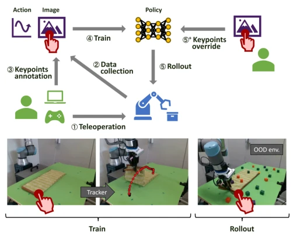
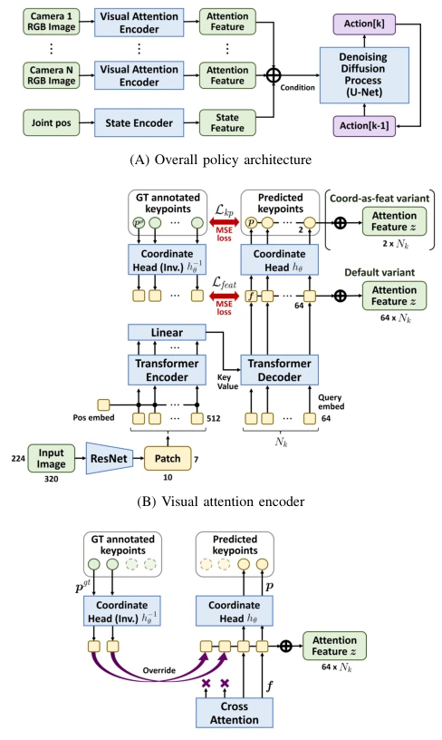
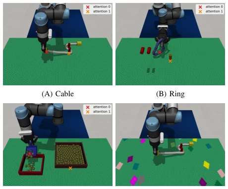
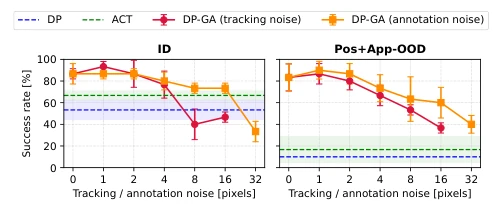
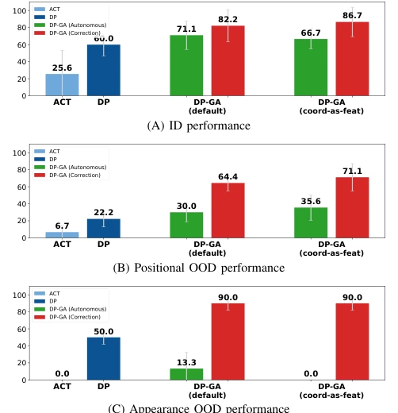
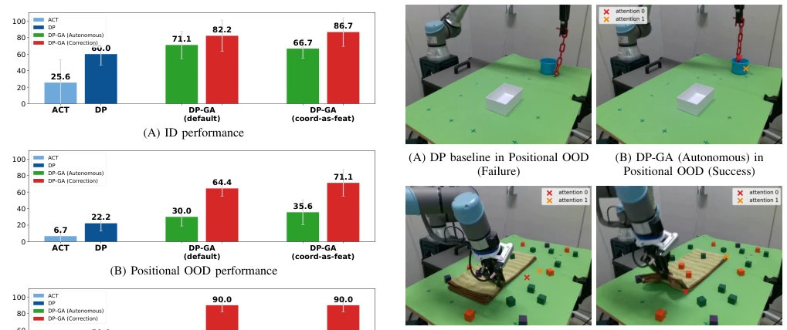

End-to-end policies resemble black boxes; humans find it impossible to intervene, only hoping the model does not behave erratically. This paper implements "visualized attention," enabling humans to provide feedback during robot operation, effectively adding a transparent lid to the black box. Although it sounds like merely adding a transparent lid, it indeed mitigates attention drift during out-of-distribution (OOD) scenarios, particularly when positions or appearances change. However, relying on tracking modules and manual initial annotation constitutes a "semi-automatic" patch, still distant from true autonomous understanding. If tracking fails, this "lid" becomes invalid, and the inability to process depth information limits application in complex scenarios.
Existing end-to-end policies (e.g., Diffusion Policy) lack interpretability, making it difficult for humans to intervene in their visual focus points [1], [2]. Once encountering out-of-distribution (OOD) situations regarding position or appearance, policies are prone to misinterpretation, leading to task failure [5]. Although some have attempted using language or trajectory prompts [3], [4], the interaction cost is high or lacks spatial precision. For instance, language instructions are too abstract, and trajectory annotation is too cumbersome. This paper aims to provide a low-cost correction interface through explicit attention keypoints to address attention drift under OOD. Compared to directly modifying policy weights, this intermediate layer representation is more flexible, allowing user intervention during the inference stage without retraining, bridging the gap between black-box policies and human intervention.
The overall pipeline is Image Input -> Visual Attention Encoder (AttnEnc) -> Diffusion Policy. AttnEnc predicts keypoints and features based on the DETR architecture. The core innovation is the "Keypoint Coverage Mechanism": users can correct keypoints in the initial rollout frame, which are then automatically propagated by the tracking module. Random routing is introduced during training, allowing the policy to learn both predicted and corrected features simultaneously to ensure consistency. Through feature space alignment loss, it ensures that forward-predicted and reverse-recovered features are aligned spatially, avoiding diffusion model dependency on a single path. Additionally, forward-backward weight sharing is used to ensure reversible mapping of coordinates and features, preventing inconsistency between corrected and predicted feature distributions, thereby enhancing robustness. This design allows the policy to maintain autonomy while retaining a channel for human intervention.

Fig. 1. Overview of the GuidedAttention framework. Teleoperated demonstrations are annotated with attention keypoints only in the initial frame, which serve as an interpretable and correctable intermediate representation for visuomotor policy learning. During rollout, users may op- tionally correct selected keypoints once, after which they are automatically tracked throughout execution.

Fig. 2. Policy architecture overview. (A) The policy conditions a denoising diffusion process for action generation on attention features from image-based keypoints, together with propriocep- tive states. (B) Each image is processed by a ResNet and Transformer encoder-decoder to predict pixel-level keypoints, which are embedded as attention features. (C) During rollout, users can optionally correct predicted keypoints when attention drift occurs. The corrected keypoints replace the predictions and update the attention features, enabling recovery from failures. The figure shows two of four keypoints overridden.
Six tasks were tested on MuJoCo simulation and a real UR5e robot, including threading, ring stacking, and towel folding. Baselines include DP and ACT. The metric is success rate. Results show that under OOD conditions, DP-GA improves significantly compared to baselines, especially after adding human correction, with success rate increasing by 15-30pp. Ablation studies prove that random routing and attention supervision are crucial; performance drops significantly after removal. Qualitative results also show that after correction, it can successfully handle occlusion or texture changes, while baselines are prone to failure. This proves the effectiveness of explicit attention in complex environments, but also exposes dependency on tracking quality; if tracking fails, correction cannot continue.

Fig. 3. Simulation manipulation tasks. (A) Cable: passing a flexible cable through a narrow gap between poles. (B) Ring: placing a flexible ring around a pole. (C) Particle: scooping particles into a box. (D) Cable under Appearance OOD: textured distractors on the tabletop introduce severe visual changes. All tasks use two attention keypoints: a dynamic keypoint attached to the manipulated object or tool, and a static keypoint defined on the target object or environment.

Fig. 4. Quantitative impact of tracking and annotation accuracy.

Fig. 6. Real-world manipulation success rates. Results in (A) and (B) are averaged across three real-world tasks. (C) is evaluated only on the Towel Fold task. All results are averaged over three random seeds with 10 rollouts per condition for each seed. Blue bars indicate baseline policies. Green bars indicate fully autonomous execution. Red bars indicate optional human correction of the predicted attention.
其他图片Other Figures

Fig. 7. Qualitative real-world rollouts under distribution shift. Guided visual attention improves robustness by maintaining focus on task- relevant structures. The predicted keypoints are visualized as x-marks on the images in DP-GA. (A, B) In the Chain Pick-and-Place task, DP-GA autonomously keeps attention near the chain end and around the cup rim, enabling successful placement even at unseen object positions. (C, D) In the Towel Fold task, accurate keypoints are provided only at the initial frame and then continuously used through automatic tracking, ensuring reliable grasping of the towel corner and successful folding under significant appearance changes.